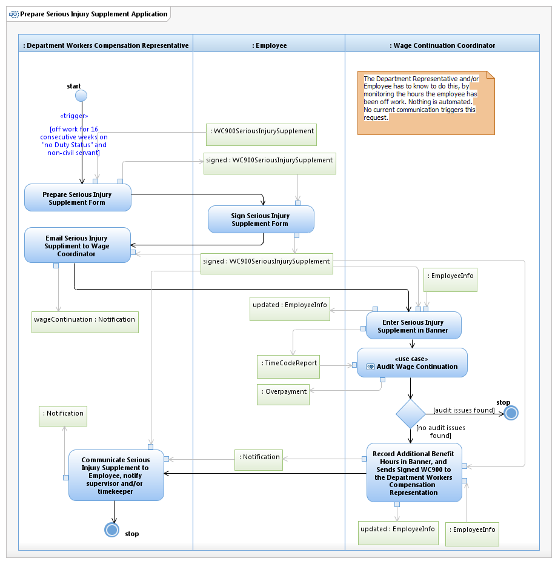

Use Case Model: Prepare Serious Injury Supplement Application

Use Case Model: Prepare Serious Injury Supplement Application
Architect: Aaron Brown, IT Enterprise Architect Senior
Date Last Modified: 3/26/2013
User Review: Leslie Milvo, Cindy Steffen, Shelly Sheppard
Date: 3/26/2013
When a non-Civil Servant is off work for 16 consecutive weeks on "no Duty Status", they are eligible for Serious Injury Supplemental pay. The Designated Department Representative prepares the WC900 form, gets the employee to sign the form and then returns this to the Wage Continuation Team for activation.
Follow link to Role Definitions
Use Case Model: Prepare Serious Injury Supplement Application

Activity Model: Prepare Serious Injury Supplement Application